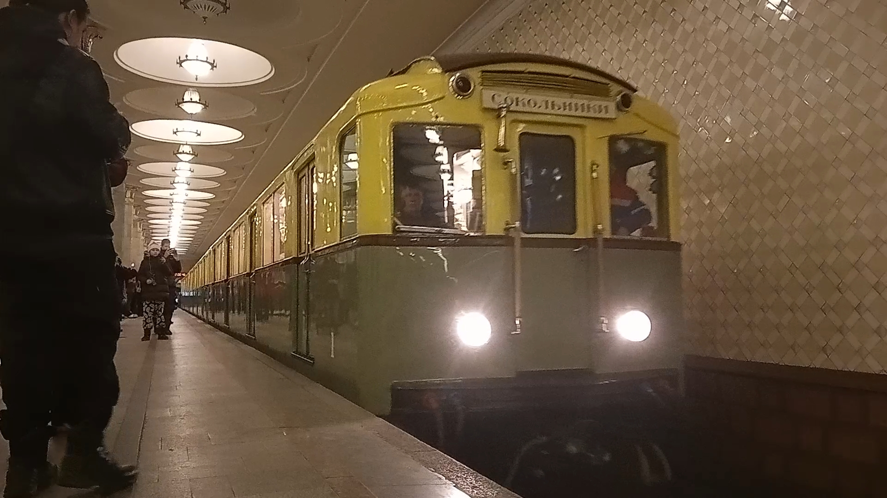
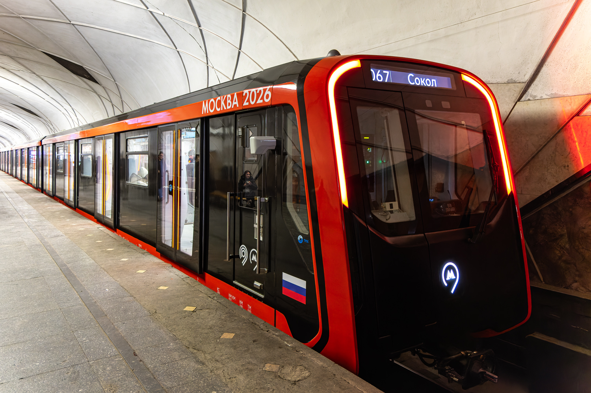

Подвижной состав Московского метро
За 90 лет Московский метрополитен эксплуатировал десятки типов вагонов — от деревянных «А» до новейших «Москва-2026». Этот раздел документирует все модификации подвижного состава: серийные, опытные, служебные и уникальные экземпляры.
Многие модели сохранились до наших дней — в музеях, в депо или в виде отдельных вагонов. Некоторые ушли в историю, оставив след в развитии метровагоностроения.
Довоенные (1934–1941)
Первое поколение вагонов Московского метрополитена. Деревянные кузова, продольные сиденья, ручное управление. Именно эти вагоны открыли движение 15 мая 1935 года.
А (моторный / прицепной)
Первый тип вагонов Московского метрополитена. Построен на Мытищинском вагоностроительном заводе (МВЗ) в 1934 году. Кузов деревянный с металлической обшивкой, сиденья продольные.
- Моторные — с токоприёмниками
- Прицепные — без токоприёмников
- Сохранился №1 (Москва) и №1001 (Баку)
Б (моторный / прицепной) / Бм
Модернизированная версия типа А, выпускавшаяся МВЗ в 1937–1939 годах. Построено 162 вагона (81 секция). Токоприёмники — только на моторных.
- Увеличено количество воздухозаборников
- Усилены тележки
- Сохранился вагон №1119
Г
Серийный тип, выпускавшийся в 1939–1940 и 1947–1955 годах. Всего построено 425 вагонов. Все вагоны типа Г были моторными.
- Реостатное электрическое торможение
- Первым получил сине-голубую окраску
- Сохранились вагоны №530; 661
Послевоенные (1945–1991)
Эпоха массового метровагоностроения. Трофейные немецкие вагоны, типы Д и Е, Е-образные модификации (Еж, Еж3, Еж6), служебные электровозы типа Л.
В (В-1 – В-4)
Трофейные немецкие вагоны, полученные по репарации после войны. Бывшие вагоны Берлинского метро (типы С1–С3), адаптированные под советские стандарты.
Подробнее →УМ5
Учебно-моторный вагон на базе типа Д. Построен в 1949 году как модель М5. Использовался для обучения машинистов.
Подробнее →Д
Серийный тип, выпускавшийся в 1955–1963 годах. Всего построено 662 вагона. Все вагоны — моторные.
Подробнее →Е
Базовый тип серии, выпускавшийся с 1963 года. ММЗ начал выпуск вагонов Е, подвергавшихся неоднократной модернизации.
Подробнее →Еж / Еж1
Созданы на базе типа Е. Выпускались в двух модификациях: Еж (81-707) — головные и промежуточные; Еж1 (81-708) — облегчённый вариант, только промежуточные.
Подробнее →Еж3
Новая модификация, разработанная в 1973 году (81-710). Изменена электрическая схема: система АРС, радиодиспетчерская связь, новый пульт управления.
Подробнее →ЕжТК
Опытная модернизация вагонов Еж3/Еж6 (1997). Заменено контакторное оборудование, напряжение внутренней сети снижено до 80 В. Из-за высокой стоимости от проекта отказались.
Подробнее →Еж6
Промежуточный вагон Еж3 для системы Д-6 («Метро-2»). Использовался в служебных составах совместно с электровозами типа Л.
Подробнее →Л
Контактно-аккумуляторный электровоз (81-711), построенный МВЗ в 1974 и 1986 годах. Всего выпущено 6 вагонов.
Подробнее →81-715 «И»
Опытный тип, разработанный в 1973 году. Кузов из высокопрочного алюминиевого сплава — на 3 тонны легче вагонов Е.
Подробнее →81-717 базовые
Изначально предназначался как временный тип, однако по итогу производство последней модификации завершилось в 2018 году.
Подробнее →Российские (1991 — наст. вр.)
Современный подвижной состав Московского метрополитена: номерные модификации, «Русич», «Ока», «Москва» и беспилотные поезда.
Номерные (81-717 / 81-714)
81-717 / 81-714 новые
Новые версии базовых вагонов производства ЛВЗ и ММЗ.
- Три ребра жёсткости
- Разные модификации: .5, .5М, .5П
81-717.5А
Модификация с улучшенным салоном и некоторыми конструктивными изменениями. Использовалась для ретро-поезда «Сокольники».
- Маска 1-1
- Ретро-окраска
81-717.6
Модернизированная версия с новым оборудованием. Самая новая модификация номерных для Москвы
- Улучшенные характеристики
- Разные варианты окраски
81-570
Модель вагонов номерной для Тегерана, большая часть отправилась в Москву. Состав изначально был полноценным, но позже разошёлся по ЗЛ и ЛДЛ.
- Вагоны: 10188, 10189, 11317, 11343-11347
- 6 вагонов ушли в Тегеран
Русич (81-740 / 81-741)
81-740 «Русич»
Базовый сочленённый вагон. Выпускается с 2003 года. Используется на Бутовской линии и других.
- Сочленённая конструкция
- Три тележки
81-740.1 «Акварель»
Именной состав-картинная галерея. Внутри вагонов — репродукции картин. Проект с Московской школой акварели.
- Курсирует по АПЛ
- В каждом вагоне своя экспозиция
81-740.1 «Русич»
Модификация с улучшенными характеристиками. Используется на разных линиях. Отдельная вкладка пока в разработке.
- Улучшенный салон
- Разные варианты окраски
81-740.4 «Русич»
Модификация с четырьмя вагонами. Используется на Бутовской линии.
- 4-вагонная составность
- Для лёгкого метро
Ока (81-760 / 81-761)
81-760 «Ока» (серийная)
Серийный состав семейства «Ока». Выпускается с 2010 года. Используется на Калининской, Серпуховско-Тимирязевской и других линиях.
- Асинхронный привод
- Массовая эксплуатация
81-760А «Баклажан»
Модификация для Баку, оставшаяся в Москве. Главное новшество — сквозной проход между вагонами. Пурпурно-голубая окраска.
- Сквозной проход
- Работает на КСЛ
- 3 тематических оформления
Москва (81-765 / 81-775)
81-765 «Москва»
Первый состав нового семейства. Выпускается с 2016 года. Сквозной проход, современный дизайн.
- Первый серийный состав: 65001
- Работает на разных линиях
81-765.2 «Москва»
Модификация с улучшенными характеристиками. Используется на Филёвской и других линиях.
- Улучшенный комфорт
- Работает на разных линиях
81-765.4 «Москва-2019»
Модификация 2019 года с небольшими доработками. В Музее Транспорта Москвы есть макет.
- Доработка модели Москва-2017
- Современный дизайн
81-775 «Москва-2020»
Новое поколение поездов. Выпускается с 2020 года. Улучшенный комфорт, современные системы.
- Первый серийный состав: 75001-75002
- Составы работают на Кольцевой, КРЛ, БКЛ
81-775.2 «Москва-2024»
Серийная модификация 2024 года. Используется на Замоскворецкой линии и других.
- Работает с пассажирами
- Сквозной проход, USB-зарядки
81-775.2 «Москва-2026»
Серийная модификация 2026 года. Новейший поезд семейства «Москва».
- Работает с пассажирами
- Улучшенный комфорт
🤖 Беспилотные составы (отдельные экземпляры)
Беспилотная «Москва-2024»
Первый беспилотный поезд Московского метрополитена. Модель 81-775.2 с системой автоматического управления. Головной вагон №75371.
- Брендирование «Это беспилотный поезд»
- Дополнительные камеры и датчики
- Презентован президенту 16.01.2026
- Испытывается на БКЛ
Беспилотная «Москва-2026»
Второй беспилотный состав, на базе модели 81-775.2 «Москва-2026». Перестал участвовать в испытаниях.
- Беспилотное управление
- Участник Парада поездов 2026
- Уже лишился уникальной ливреи, в испытаниях не участвует
Опытные составы
Полный список опытных составов, проходивших испытания в Московском метрополитене:
Г: 301-306
Опытный состав на базе вагонов типа Г. Опытные вагоны имели смешанную продольно-поперечную схему размещения диванов
Подробнее →ЕжТК: 5923-5582-5696
Модифицированная версия вагонов типа Еж с тиристорно-импульсной системой управления.
Подробнее →И: 10001-10002-10003-10004
Экспериментальный поезд типа И с асинхронным тяговым приводом.
Подробнее →81-717: 5855-7212-7220-5854
Опытный состав легендарного семейства 81-717/714, самого массового в мире.
Подробнее →81-717(ММЗ) №0067
Обычный номерной, ставший уникальным. После аварии 2003 года использовался для монтажа экспериментальной маски кузова — прототипа состава 81-717.6К.
Подробнее →81-717.6К: 0252-0706-...-0711-0253
Модернизированная версия с новым оборудованием и дизайном.
Подробнее →Яуза: 001-...-005
Экспериментальный поезд с асинхронным тяговым приводом, разработанный в 1990-х.
Подробнее →81-720.1 (ЛВЗ): 10036-11027-11028-10037
Опытный поезд Ленинградского вагоностроительного завода.
Подробнее →81-580 ВЭКА
Уникальный опытный вагон-электровоз контактно-аккумуляторный (ВЭКА). Построены на Ленинградском вагоностроительном заводе.
Подробнее →Скиф (Русич): 0001-0501-0502-0002
Первый опытный состав семейства «Русич» — первый сочленённый поезд Московского метро.
Подробнее →Ока: 37001-30001-30002-37002 + 30003-30006
Опытный поезд семейства «Ока» (81-760/761), позже добавлены вагоны 30003-30006.
Подробнее →Фотогалерея

📸 pfandrom

📸 Виктор Будан(ТАСС)

📸 Romach(transphoto)

📸 Артём Алмазов(transphoto)
Нажмите на фото для увеличения
«Подвижной состав Московского метрополитена — это живая история города. От деревянных вагонов 1935 года до беспилотных поездов 2026 года — каждый тип оставил свой след в развитии метровагоностроения».